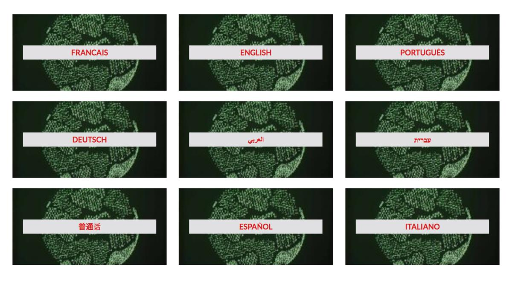

A universal impact of the arts and cultures in societies beyond borders
ARTS AND SOCIETY is a global movement of artists and of projects that aims to gather creative and artistic projects from around the world, using the Arts, culture and creativity to impact society in all issues or matters of life. Arts, Cultures and Creativity are fundamental tools in education, in learning, in improvement and in innovation, in resistances and in the fight against ignorance, collaborating with scientists, educators, scholars, and ecologists towards a global change.
The Arts and Society Project
Arts and Society is initiated by Mémoire de l’Avenir (MDA) with CIPSH, UNESCO-Most and IYGU :
A global movement of artists and projects reflecting on their impact in societies and the importance of local proposals upon a global plan.
This project was written and conceived by Margalit BERRIET with the team of MDA & A&S
WHAT – The International Year of Global Understanding (IYGU) starts from the premise that all transformations of nature are based on human actions, and all human actions are based on cultural schemes of interpretations.
Due to globalization processes, the conditions for human actions have changed dramatically.
Dealing successfully with worldwide level changes, may they be cultural, social, and climate-related, requires people to understand their own locally embedded lives within a global context. Global understanding becomes a new conditio humana, or human condition.
It necessitates bridging the gap between local acts and global effects—because thinking globally and acting appropriately on a local level presupposes Global Understanding.
"Knowledge is the factor that leads us to change our way of thinking. However, it is the understanding that leads to change attitudes. Global Understanding puts emphasis on culturally different paths to global sustainability." (1)
Global Understanding helps overcome ignorance or lack of knowledge of the global implications of social, ethical and aesthetical actions. A lack of understanding of the consequences of our actions, between cultures or between people and nature may have a disastrous impact on our future. The conditions of everyone’s lives are changing. Individuals and societies must unite in order to live together in consciousness of one another and of our natural living conditions.
WHO – Each within his/her own reality can make a difference and propose actions or provide solutions. Artists demonstrate and reflect on all questions of societies and evoke encounters between people.
WHY – Today, more than ever, initiatives should favour access to knowledge and universal values, and should seek to connect worldwide problems and solutions. We need to encourage global understanding and enhance participation and collaboration regarding global issues beyond borders, such as education, justice, humanism, pluralism, environmental consciousness, natural sciences, ethics, aesthetics and universalism.
HOW – Arts and Cultures, which incompasses learning and dialogue, are powerful instances and wonderful mediators in the constitution of social realities and personal mindsets. With the ongoing rise of digital platforms, socio-cultural practices now have, theoretically, a global reach.
Arts and artists are bridging the gap between people, continents, cultures, civilizations, and time. Arts and cultures are a journey in the world of Mankind, beyond political or religious limitations.
Art is an expression and a mirror of the human mind. It progresses, criticizes, proposes, invents, thinks, transforms. It is a record of our plural histories, visible and hidden ones.
The Arts allow individuals to develop within collective cultures, economies, and conflicts. It is an ideal mediator for dialogues. The arts connect the past, the present and the future.
The local, the regional and the global, offer original regenerated practices of abstract and utilitarian methods, alongside ideas, inventions, practices or aesthetics.
Quote: (1) Eliezer Batista, key initiator of the 1992. UN Conference on Environment and Development in Rio de Janeiro, Brazil.
SOURCE: ARTS AND SOCIETY

SOURCE: ARTS AND SOCIETY